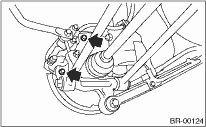
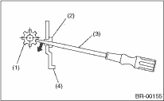
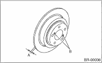

BRAKE > Rear Disc Rotor
1. Lift up the vehicle, then remove the rear wheels.
2. Pull down and release the parking brake.
3. Remove the two mounting bolts and remove the disc brake assembly.

4. Suspend the disc brake assembly so that the hose is not stretched.
5. Remove the disc rotor.
NOTE:
If it is difficult to remove the disc rotor, perform the following two methods in order.
(1) Using a flat tip screwdriver, turn the adjuster until the parking brake shoe is apart enough from disc rotor.

|
(1) |
Adjusting screw |
|
(2) |
Cover |
|
(3) |
Flat tip screwdriver |
|
(4) |
Back plate |
(2) If it is difficult to remove the disc rotor from hub, drive an 8 mm bolt into the threads B of the rotor, and remove the rotor.
